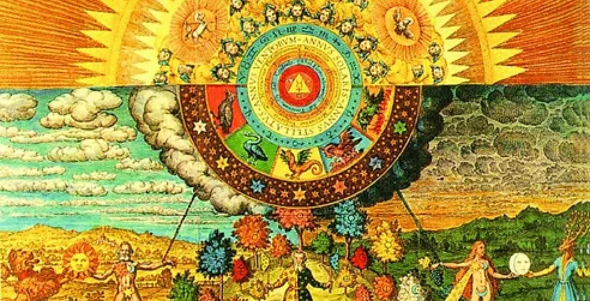

Nossos cursos
| Cruso | Duração | Perfil do egresso |
|---|---|---|
| Magia Natural | 3 anos | Espera-se que o profissional tenha profundo conhecimento em ervas, cristais e tarot, estando habilitado a lecionar em cursos da área e ou realizar consulta particulares |
| Alquimia | 5 anos | O profissional possui sólidos conhecimentos em química e alquimia, podendo atuar na pesquisa, ensino e consultoria |
| Teologia | 4 anos | O profissional possui sólidos conhecimentos na história das religiões comparadas, podendo lecionar na área e desenvolver pesquisa |
| Astrologia | 3 anos | Espera-se do egresso solidos conhecimentos em cíclos planetários e astrológico, podendo lecionar na área e ou realizar consultas |
| Runas | 2.5 anos | Espera-se do egresso sólidos conhecimentos em mitologia nórdica e celta, atua na área de consultas divinatória |
| Cabalah | 3 anos | Profissional possui sólidos conhecimentos na cultura judaica, atua no ensino e na pesquisa, com foco em religiões judaico-cristã e sistemas mágicos |